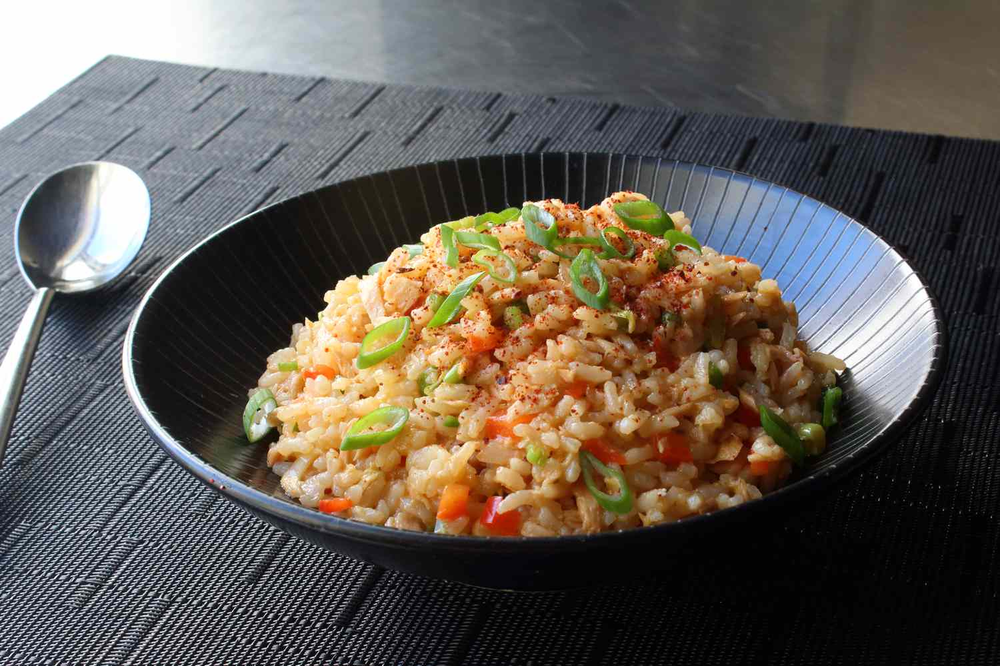

Tuna and Rice
Odin Recipes

A nice simply dish that carefully balances low cost, ease to cook and not too hurtful on the wallet.
Ingredients:
- A can of Tuna of your preferance of flavour and size (e.g. Sweet Thai Chili at 95g or Tomato and Basli at 185g).
- Microwaveable Rice Pouch of your flavour preferance (Basmati Rice for a more classic flavour or Peri Peri for more flavour!).
Equipment Needed:
- Microwave.
- Bowl for the dish to go in.
- A Spoon, ideally with a long handle.
Recipe:
- Take your Rice Pouch and tear/cut an opening approximately 3cm long in the top corner.
- Place the Rice Pouch inside a Microwave and Microwave said pouch at the reccomended time as suggested on the packaging (often 1-2 Minutes).
- Carefully take out the Pouch once the Microwave is complete being wary not to drop or burn yourself, then pour the contents inside a bowl of your perferance.
- Open the tin that your tuna is inside and use your spoon to scoop the contents ontop of the rice you placed into the bowl.
- Mix the Tuna and Rice together until they are both evenly distributed inside the bowl.
- Enjoy your lovely dish that will look nothing like and will most likely be worse than the photo above :).